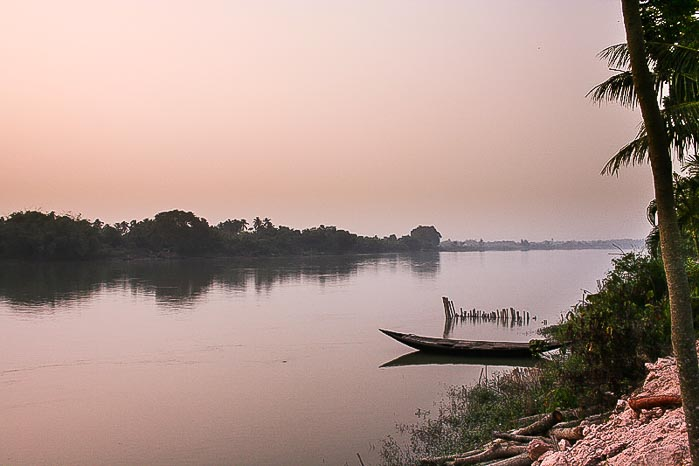

Pancha Bhootha - The Five Elements
1. Earth (Prithvi):
Earth symbolizes stability and nourishment. It sustains all living beings by providing food, shelter, and materials for survival. The soil beneath our feet nurtures life, offering a base for growth. Respecting and preserving Earth is essential for ensuring the well-being of all creatures that inhabit it.
please dont hurt your earth it is your mother
who avoid using non-biodegradable materials like plastic that pollute the soil.
Avoid excessive mining and deforestation that damage the land.
Avoid littering and improper waste disposal, which harms the ecosystem.
Avoid over-farming or monoculture, which depletes soil nutrients.
Avoid destroying natural habitats and ecosystems for construction or development.

2.Jala(Water):
Water is the foundation of all life on Earth. It supports ecosystems, nourishes plants and animals, and is essential for human survival. Yet, while water covers 71% of our planet, only a tiny portion is accessible as fresh, usable water. With a growing population and climate changes, it's crucial that we understand the importance of preserving and protecting this vital resource.
Each of us has a role to play in water conservation. Simple steps we can take include:
Reducing Water Waste: Turning off taps, fixing leaks, and using water-saving devices can make a big difference.
Minimizing Pollution: Proper disposal of waste, reducing plastic use, and supporting eco-friendly products can help protect water sources.
Supporting Conservation Efforts: Joining or supporting organizations dedicated to cleaning and preserving water sources can create lasting impacts.
Raising Awareness: Educating others about the importance of water and conservation helps create a ripple effect in protecting our planet.

3. Agni (Fire):
Fire is a powerful element that represents energy, transformation, and warmth. It has been central to human survival, enabling cooking, warmth, and technological advancements. However, the misuse and overuse of fire-related resources like fossil fuels have resulted in environmental damage, such as global warming and air pollution.
With fire as a symbol of energy, it’s vital to manage its use responsibly to ensure a balanced and sustainable relationship with this element.
Each of us can contribute to preserving and responsibly using energy through:
Switching to Renewable Energy: Solar panels, wind energy, and other clean sources reduce the dependence on fossil fuels.
Saving Electricity: Simple actions like turning off unused lights, using energy-efficient appliances, and embracing natural light can conserve energy.
Reducing Carbon Footprint: Opt for alternatives to burning fuels, such as cycling or using electric vehicles, and support green initiatives.
Preventing Wildfires: Handle campfires, fireworks, and other fire-related activities with care, especially in sensitive ecosystems.
Spreading Awareness: Share the importance of energy conservation with family and friends to inspire more responsible energy use.

"4.Vayu (Air)":
Air symbolizes freedom, movement, and life. It is essential for breathing, weather patterns, and ecosystems. However, air pollution from industrial emissions, vehicles, and deforestation harms the environment and human health. To preserve air quality, we must act responsibly and reduce our impact.
How to Protect Air:
Reduce Emissions: Use public transport, carpool, or cycle to minimize vehicle pollution.
Plant Trees: Trees absorb CO2 and release oxygen, improving air quality.
Use Renewable Energy: Switch to solar, wind, and other clean energy sources.
Save Energy: Turn off lights and use energy-efficient appliances to reduce air pollution.
Support Clean Air Policies: Advocate for regulations to reduce industrial emissions.
Spread Awareness: Educate others on the importance of clean air and energy c